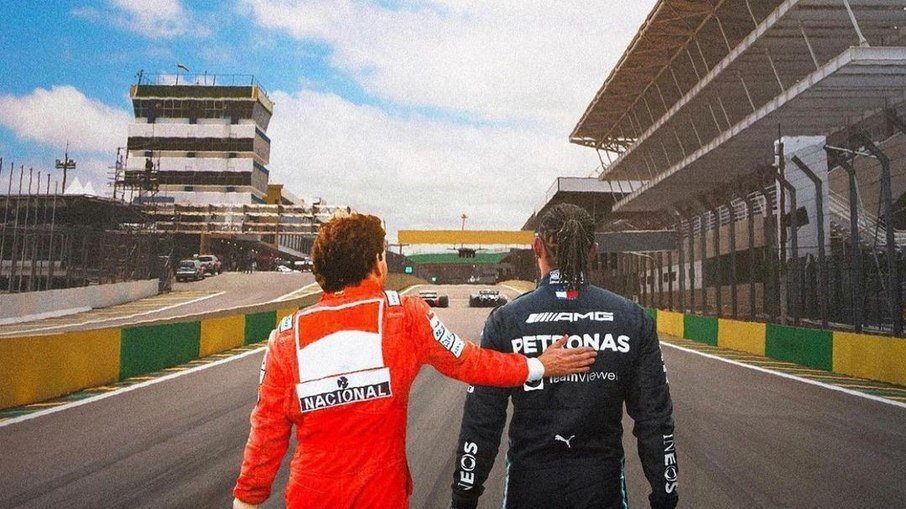
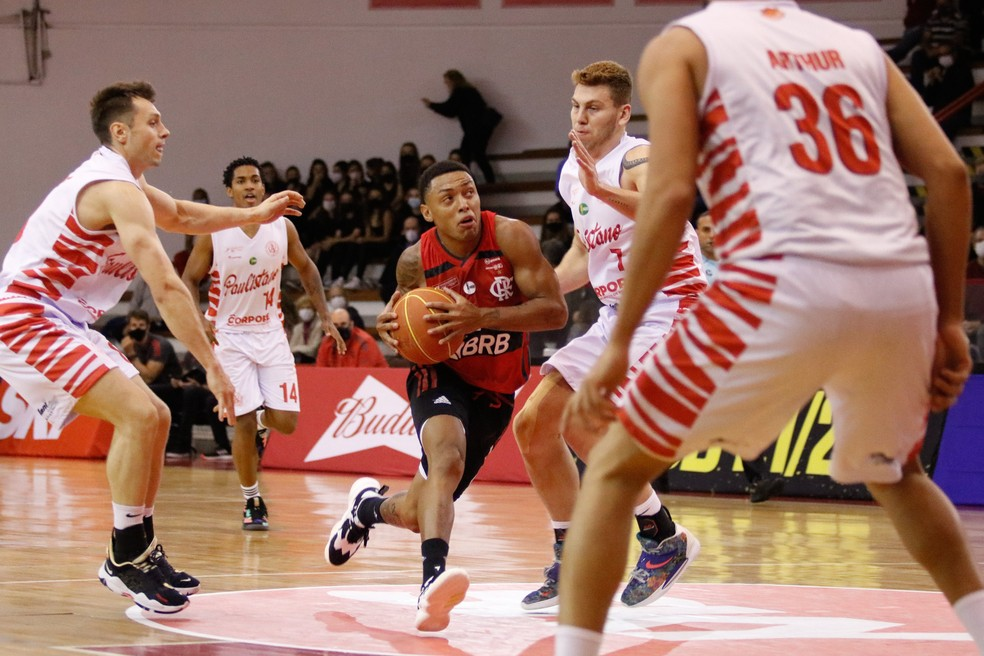

Lewis Hamilton se declara a Ayrton Senna: "Minha maior inspiração"

Reprodução/Instagram
Montagem feita pela Mercedes retrata Ayrton Senna e Lewis Hamilton caminhando por Interlagos
O heptacampeão mundial de Fórmula 1, Lewis Hamilton já está no Brasil e vive a expectativa para mais um
GP de Interlagos. Além da amizade com Neymar e Gabriel Medina , o piloto da Mercedes já revelou ter um
grande apreço pelo Brasil e especialmente por Ayrton Senna, piloto que é ídolo do britânico.
"Minha maior inspiração. O jeito como ele pilotava o carro, a paixão dele pela vida e pelo esporte. Mais
que tudo, a maneira como ele enfrentou um sistema que nem sempre foi gentil com ele. Que o legado dele
@oficialayrtonsenna continue para sempre, especialmente vibrante neste fim de semana", publicou
Hamilton.
OO GP de Interlagos acontece no próximo domingo e Hamilton terá que se esforçar caso queira seguir na
briga pelo título mundial desta temporada. Devido a uma troca de motor, o piloto da Mercedes perdeu
cinco posições no grid de largada.
Por
Lucas Barreiros
|
11/11/2021 17:55
Flamengo perde para Paulistano e vê cair invencibilidade de 42 jogos no basquete

Yago encara a marcação tripla do Paulistano — Foto: Helena Petry/CRF
Jogando como seu fosse uma final, o Paulistano pôs fim a uma invencibilidade de 42 jogos do Flamengo em
competições oficiais de basquete. Perfeito na parte coletiva e atuando de forma aguerrida, o time do
técnico Demétrius Ferracciú bateu o Rubro-Negro por 87 a 81 na noite desta quinta no ginásio Antônio
Prado Jr, em São Paulo. O Flamengo agora soma seis vitórias e uma derrota no NBB 2021/22. Já o
Paulistano tem três triunfos em apenas quatro jogos realizados.
Du Sommer e Yago dividiram o status de cestinhas da partida, ambos com 20 pontos. Pelo lado do
Paulistano, Celebic (16 pontos) e Cauê (13 pontos) também tiveram atuações destacadas, enquanto que
Mineiro anotou 15 pontos para a equipe carioca, dois a mais que Robinson.
O jogo começou movimentado e, com três minutos corridos, o placar apontava 8 a 7 para os donos da casa.
Aos quatro, Yago acertou bola de três, virando para 10 a 8. Pouco depois, Dar Tucker deixou o Flamengo
com cinco pontos de frente - 12 a 8. O Paulistano não demorou a reagir, e, aos cinco, Du Sommer igualou
em 12 a 12.
O Rubro-Negro respondeu com cestas de Yago e Faverani, mas, aos nove, Celebic virou para 21 a 20 numa
cesta de três. No fim, Túlio da Silva sofreu falta e converteu um dos dois lances livres, deixando o
Flamengo perto da vitória parcial. Só que Celebic sofreu uma falta no estouro do cronômetro, definindo o
placar do quarto em 26 a 24 para o Paulistano.
O Flamengo voltou para o último quarto imprimindo um forte ritmo, e Olivinha acertou uma bola de três
logo no primeiro lance. O Paulistano não se abateu, respondendo com uma cesta de Arthur. Aos três
minutos, Robinson sofreu falta e converteu os dois lances livres, diminuindo para 73 a 70. Só que
Celebic e Arthur voltaram a deixar a equipe da casa com sete pontos de frente.
Administrando bem a vantagem, o Paulistano entrou nos dois minutos finais vencendo por 80 a 74. Aos nove,
Du Sommer fez 82 a 75, deixando os mandantes mais perto da vitória. A 33 segundos do fim, Yago e
Olivinha erraram duas bolas de três em sequência, e o Paulistano tratou de sacramentar a vitória por 87
a 81, pondo fim à longa invencibilidade do Flamengo.